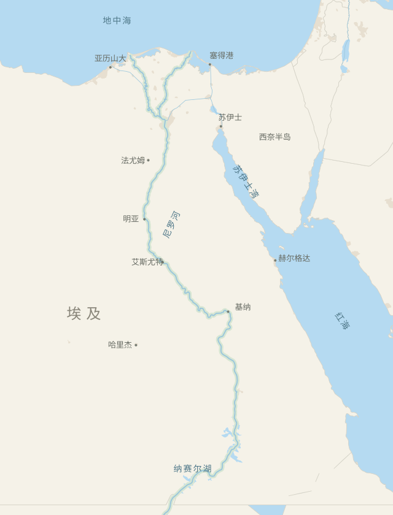

<!doctype html>
<html lang="zh-CN">
<meta charset="utf-8"><meta name="viewport" content="width=device-width,initial-scale=1">
<title>安途 · 埃及旅行</title>
<link rel="stylesheet" href="style.css">
<nav class="side-nav" aria-label="安途导航">
 <button class="brand" data-act="home" aria-label="安途首页" title="安途"><svg viewBox="0 0 32 32" aria-hidden="true"><circle cx="16" cy="16" r="14"/><path d="m11 21 4-10 6 0-4 10z" fill="currentColor" stroke="none"/></svg></button>
 <div class="side-nav-links">
  <button data-act="rail-chat" aria-label="对话" title="对话"><svg viewBox="0 0 24 24" aria-hidden="true"><path d="M21 11.5a8.5 8.5 0 0 1-8.5 8.5c-1.3 0-2.5-.3-3.6-.8L4 21l1.4-4.4A8.5 8.5 0 1 1 21 11.5Z"/></svg></button>
  <button data-act="rail-interests" aria-label="感兴趣的体验" title="感兴趣的体验" aria-expanded="false" aria-controls="rail-interests"><svg viewBox="0 0 24 24" aria-hidden="true"><path d="M20.8 5.7a5 5 0 0 0-7 0L12 7.5l-1.8-1.8a5 5 0 0 0-7 7l8.8 8.5 8.8-8.5a5 5 0 0 0 0-7Z"/></svg></button>
  <button data-act="rail-search" aria-label="搜索地点" title="搜索地点"><svg viewBox="0 0 24 24" aria-hidden="true"><circle cx="10.5" cy="10.5" r="6.7"/><path d="m15.6 15.6 4.5 4.5"/></svg></button>
 </div>
</nav>
<section class="rail-interests" id="rail-interests" aria-labelledby="rail-interests-title" hidden>
 <h2 id="rail-interests-title">感兴趣的体验</h2>
 <div id="rail-interests-list"></div>
</section>
<header class="top">
  <div id="identity"><strong>新旅行</strong></div>
  <div class="trip-controls">
   <nav class="trip-pill" aria-label="旅行条件">
    <button type="button" data-act="trip-field:destination" aria-controls="trip-field-panel" aria-expanded="false">目的地</button>
    <button type="button" data-act="trip-field:dates" aria-controls="trip-field-panel" aria-expanded="false">日期</button>
    <button type="button" data-act="trip-field:companions" aria-controls="trip-field-panel" aria-expanded="false">同行人</button>
    <button type="button" data-act="trip-field:budget" aria-controls="trip-field-panel" aria-expanded="false">预算</button>
    <button type="button" data-act="trip-field:preferences" aria-controls="trip-field-panel" aria-expanded="false" hidden>偏好</button>
   </nav>
  </div>
  <nav aria-label="工作空间"><button data-act="itinerary" hidden>当前行程</button><button id="results-toggle" data-act="results" hidden></button><button id="chat-toggle" data-act="chat" hidden></button></nav>
</header>
<nav class="mobile-tabs" id="mobile-tabs" aria-label="工作视图"><button data-act="tab:results">成果</button><button data-act="tab:chat">对话</button><button data-act="tab:map">地图</button><button data-act="itinerary" hidden>当前行程</button></nav>
<main id="workspace" data-layout="start" data-tab="chat">
 <section id="itinerary-timeline" aria-labelledby="timeline-heading" hidden></section>
 <div id="results" aria-labelledby="results-title">
  <div class="chat-title" id="results-title"><b>目的地探索</b></div>
  <div class="result-drawer-toolbar" id="result-drawer-toolbar" hidden></div>
  <div class="result-inner" id="result-inner"></div>
 </div>
 <section id="chat" aria-label="AI 对话">
  <div class="chat-title" id="chat-title"></div>
  <div class="floating-chat-toolbar">
   <button type="button" data-act="chat-minimize" aria-label="最小化对话" title="最小化对话" aria-controls="thread"><svg viewBox="0 0 24 24" aria-hidden="true"><path d="M6 12h12"/></svg></button>
   <b>安途对话</b>
   <button type="button" data-act="chat-full" aria-label="在完整视图中打开对话" title="在完整视图中打开对话"><svg viewBox="0 0 24 24" aria-hidden="true"><path d="M14 4h6v6M20 4l-6 6M10 20H4v-6m0 6 6-6"/></svg></button>
  </div>
  <div class="thread" id="thread" aria-live="polite"></div>
  <div class="composer-area">
   <div id="prompts"></div>
   <form id="composer">
    <button id="floating-chat-trigger" type="button" data-act="chat-open" aria-label="打开悬浮对话" title="打开悬浮对话" aria-controls="thread" aria-expanded="false"><svg viewBox="0 0 24 24" aria-hidden="true"><path d="M20 11.5a8 8 0 0 1-8 8 9 9 0 0 1-3.6-.8L4 20l1.3-4.1A8 8 0 1 1 20 11.5Z"/></svg></button>
    <textarea id="input" rows="2" aria-label="旅行问题" placeholder="说说你想去哪里…"></textarea>
    <button class="send" aria-label="发送" type="submit">↑</button>
   </form>
  </div>
 </section>
 <section id="map" aria-label="埃及地图">
  <div class="map-top">
   <div class="map-top-actions">
   <button class="map-round" data-act="fullscreen" aria-label="向左展开地图" aria-pressed="false" title="向左展开地图"><svg viewBox="0 0 24 24" aria-hidden="true"><path d="M3 4v16M22 12H8m6-6-6 6 6 6"/></svg></button>
   <button class="map-round" type="button" data-act="map-search" aria-label="搜索地图" title="搜索地图" aria-expanded="false" aria-controls="map-search-panel"><svg viewBox="0 0 24 24" aria-hidden="true"><circle cx="10.5" cy="10.5" r="6.7"/><path d="m15.6 15.6 4.5 4.5"/></svg></button>
   </div>
   <span id="map-title">埃及</span>
   <button class="map-search-reset" data-act="map-search-reset" hidden>返回总览</button>
  </div>
  <div id="map-search-panel" class="map-search-panel" hidden>
   <input type="search" id="map-search-input" aria-label="搜索埃及城市或景点" placeholder="搜索埃及的城市或景点" autocomplete="off">
   <p id="map-search-status" role="status"></p>
   <div id="map-search-results" aria-label="地点搜索结果"></div>
  </div>
  <div class="map-viewport"><div id="atlas">
   
   <svg viewBox="0 0 640 840" role="img" aria-label="埃及地理底图：地中海、红海、尼罗河及主要城市">
    <g id="links"></g>
   </svg>
   <div id="pins"></div>
  </div></div>
  <div id="map-pop"></div>
  <div class="map-foot">
   <div class="map-caption"><span id="map-legend"><i></i> 地理关系 · 非班次</span><a href="https://www.naturalearthdata.com/" target="_blank" rel="noopener">Natural Earth</a></div>
  </div>
  <div class="map-weather">
   <div id="weather-details" class="weather-details" hidden></div>
   <button type="button" class="weather-pill" data-act="weather" aria-expanded="false" aria-controls="weather-details">
    <svg viewBox="0 0 24 24" aria-hidden="true"><path d="M20.4 15a8.8 8.8 0 0 1-11.5-11A8.8 8.8 0 1 0 20.4 15Z"/></svg>
    <span id="weather-summary" aria-live="polite">开罗天气</span>
   </button>
  </div>
  <div class="map-tools">
   <span id="location-status" class="location-status" role="status" hidden></span>
   <button class="map-round" data-act="locate" aria-label="定位到当前位置" title="定位到当前位置"><svg viewBox="0 0 24 24" aria-hidden="true"><circle cx="12" cy="12" r="7.5"/><path d="M12 2v4m0 12v4M2 12h4m12 0h4"/><circle cx="12" cy="12" r="1" fill="currentColor" stroke="none"/></svg></button>
   <div class="zoom-buttons" aria-label="地图缩放" role="group">
    <button data-act="zoom-in" aria-label="放大地图" title="放大地图"><svg viewBox="0 0 24 24" aria-hidden="true"><path d="M5 12h14M12 5v14"/></svg></button>
    <button data-act="zoom-out" aria-label="缩小地图" title="缩小地图"><svg viewBox="0 0 24 24" aria-hidden="true"><path d="M5 12h14"/></svg></button>
   </div>
  </div>
 </section>
</main>
<dialog id="trip-field-panel" class="trip-dialog" aria-labelledby="trip-field-label">
 <form id="trip-field-form">
  <header class="trip-dialog-header">
   <button type="button" class="trip-dialog-close" data-trip="close" aria-label="关闭">×</button>
   <h2 id="trip-field-label"></h2>
   <div id="trip-field-context"></div>
  </header>
  <div id="trip-field-body" class="trip-dialog-body"></div>
  <footer class="trip-dialog-footer">
   <button type="button" id="trip-field-clear" data-trip="clear" hidden>清除</button>
   <button class="primary" id="trip-field-submit" type="submit">保存</button>
  </footer>
 </form>
</dialog>
<dialog id="city-review-panel" class="trip-dialog" aria-labelledby="city-review-title" aria-describedby="city-review-message">
 <header class="trip-dialog-header">
  <h2 id="city-review-title">这轮精选体验看完了</h2>
 </header>
 <p id="city-review-message" class="trip-dialog-body quiet"></p>
 <footer class="trip-dialog-footer">
  <button type="button" data-act="city-review-elsewhere">先看看别处</button>
  <button type="button" class="primary" data-act="city-review-continue" autofocus>继续探索这里</button>
 </footer>
</dialog>
<dialog id="city-gallery" class="workspace-preview-dialog" aria-labelledby="city-gallery-title">
 <header><h2 id="city-gallery-title"></h2><button data-act="city-gallery-close" aria-label="关闭照片" autofocus>×</button></header>
 <div id="city-gallery-photos"></div>
</dialog>
<dialog id="transport-list-dialog" class="workspace-preview-dialog" aria-labelledby="transport-list-title">
 <header><button type="button" data-act="transport-list-close" aria-label="关闭交通列表" autofocus>×</button><h2 id="transport-list-title"></h2></header>
 <div id="transport-list-body"></div>
</dialog>
<dialog id="connection-picker" class="trip-dialog" aria-labelledby="connection-picker-title">
 <header class="trip-dialog-header">
  <button type="button" class="trip-dialog-close" data-act="connection-picker-close" aria-label="关闭">×</button>
  <h2 id="connection-picker-title"></h2>
 </header>
 <div class="trip-dialog-body" id="connection-picker-list"></div>
</dialog>
<script src="trip-fields.js"></script>
<script src="assets/egypt-places.js"></script>
<script src="assets/city-experiences.js"></script>
<script src="assets/city-photos.js"></script>
<script src="assets/experience-photos.js"></script>
<script src="exploration.js"></script>
<script src="skeleton.js"></script>
<script src="timeline.js"></script>
<script src="hypothesis.js"></script>
<script src="city-actions.js"></script>
<script src="transport-fixtures.js"></script>
<script src="transport-search-controls.js"></script>
<script src="transport-connection.js"></script>
<script src="app.js"></script>
</html>
